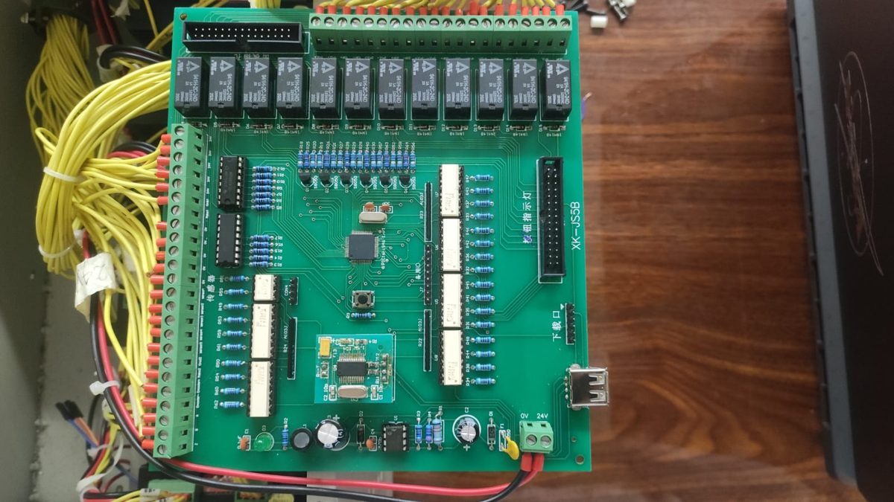
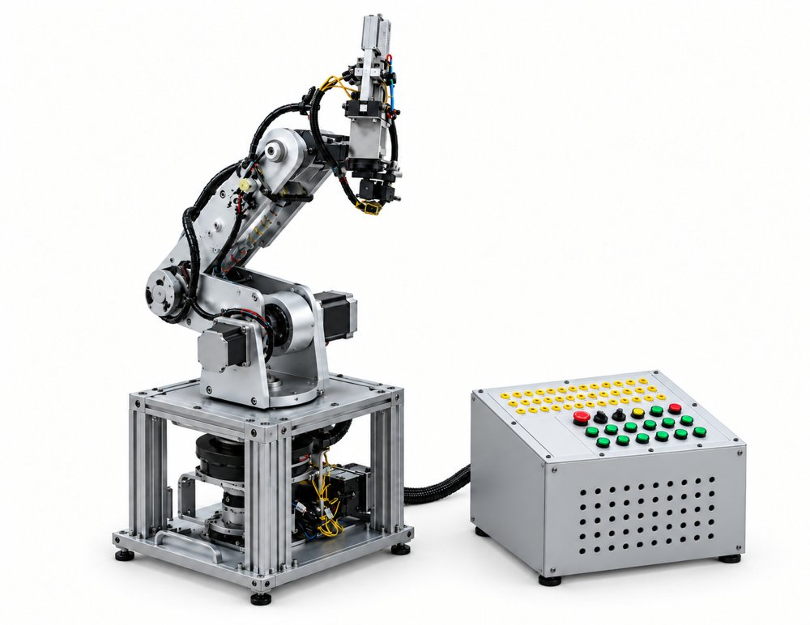

Estado actual: lazo abierto. Los sensores Hall y los finales de carrera sólo protegen los límites y hacen el homing. El encoder de la base existe, pero no está cableado al PIC, así que la posición se estima contando pulsos.
── conexión cableada- - - enlace de datosEl encoder ZT-101 llegaría a RB0 (pin 48), pero hoy no está cableado.
| Componente | Modelo | Función |
|---|---|---|
| Microcontrolador | PIC16F1946 · 64 pines · ADC 10 bits · 2 EUSART | Lógica de control de los seis ejes |
| Drivers | DM542 / 2M542 y 2MA320 | Convierten los pulsos en corriente de fase |
| Motores | NEMA 23 (57J1854-828) · NEMA 17 (42J1848-604) · NEMA 16 | Accionan las articulaciones |
| Sensores de límite | NJK-5002C (Hall) · M102-011 (microinterruptor) | Protección y homing |
| Encoder | MBL3806-AB-600-24C · 600 PPR | Previsto para cerrar el lazo de la base |
| Relés | 12 relés KA en la tarjeta | Conmutan los mandos de potencia |
| Alimentación | Fuente conmutada 24 VDC | Drivers, tarjeta y sensores |
Pines más usados del PIC
Resumen; el detalle de los 64 pines está en el PDF del pinaje.
| Señal | Pin | Puerto | Uso |
|---|---|---|---|
| SENSOR1 … SENSOR7 | 58, 55, 54, 53, 52, 51, 50 | RD0 … RD6 | Sensores Hall y finales de carrera |
| Encoder fase A | 48 | RB0 / INT | Interrupción externa (sin cablear) |
| PWM1 | 33 | RC2 / CCP1 | Salida PWM disponible |
| PWM2 | 59 | RE7 | Salida PWM disponible |
| EUSART1 | IO4 / IO5 | TX1 / RX1 | Libre para la telemetría hacia la PC |

